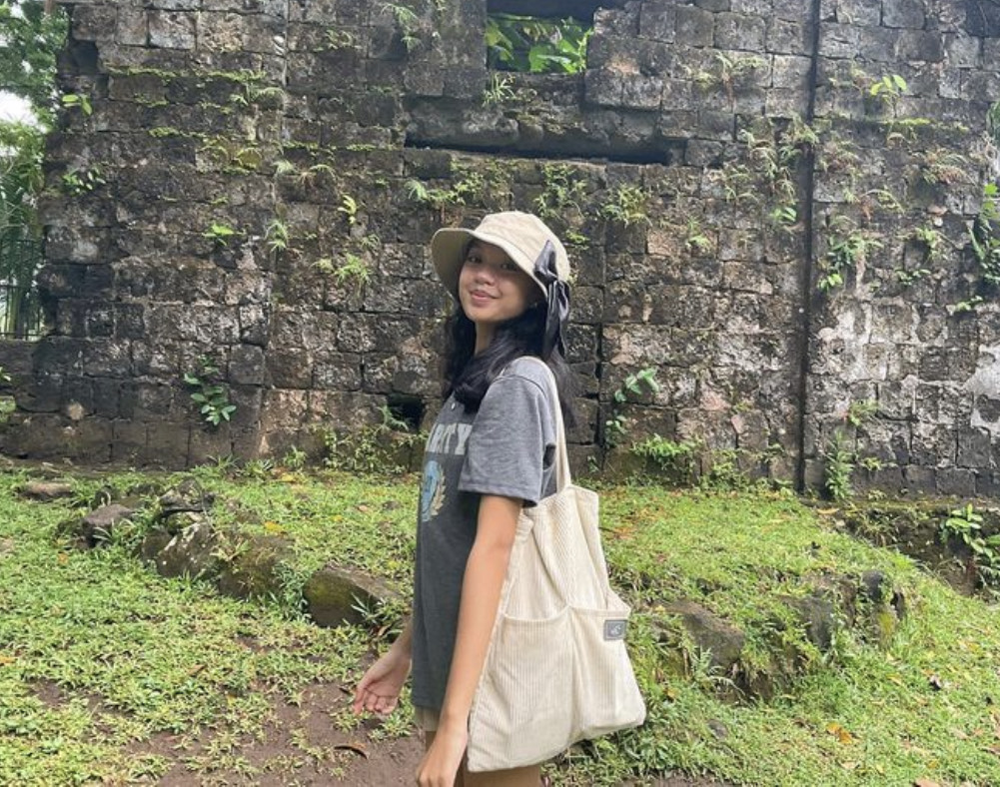

- - - - - - - - - - - - - - - - - - - - ABOUT THE DESIGNER - - - - - - - - - - - - - - - - - - -
Kristina Camille Salomia studies at Ateneo de Davao University and is a 9 - Edmund Campion student.
She is a bubbly, sweet person who enjoys interacting with others. She enjoys spending time with her family and friends, but she manages to find time for her studies as well.
She is a warm-hearted woman who genuinely cares about others, which explains her love and concern for the children at PPHC; she believes that every child deserves to be happy and loved.

Scroll to top